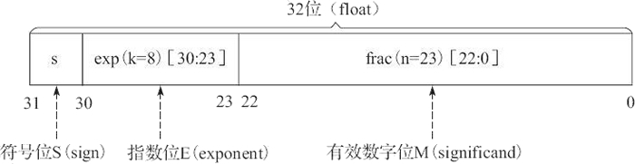
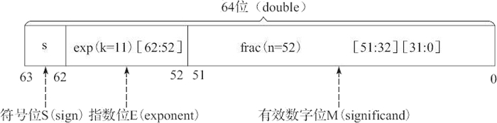

不同于原书籍，笔记从信息存储、整型编码与运算、浮点编码与运算共三节进行概括。以便加强自身记忆以及自己日后查阅。 总的来说，本章要研究如何在有限的空间里表示数。
| C declaration | Bytes | ||
|---|---|---|---|
| Signed | Unsigned | 32-bit | 64-bit |
| char | unsigned char | 1 | 1 |
| short | unsigned short | 2 | 2 |
| int | unsigned int | 4 | 4 |
| long | unsigned long | 4 | 8 |
| int32_t | uint32_t | 4 | 4 |
| int64_t | uint64_t | 8 | 8 |
| char* | / | 4 | 8 |
| float | / | 4 | 4 |
| double | / | 8 | 8 |
值得一提的是，char*指针在32位系统是以4字节存的，而在64位系统中是以8字节存的。 这是因为32位系统的虚拟内存地址是32位的，而64位系统是64位的。 也就是说，32位系统的最大寻址空间是2的32次方，约4GB；而64位系统寻址范围理论可上亿GB。 该内容应该与体系结构有关，暂时做了解即可。（P.S. 1字节byte是8位，也就是8比特bit）
大端模式(Big endian)，是指数据的高字节保存在内存的低地址中，而数据的低字节保存在内存的高地址中。这和我们的阅读习惯一致。 小端模式(Little endian)，是指数据的高字节保存在内存的高地址中，而数据的低字节保存在内存的低地址中。
比如说int0x1234567储存在地址0x100，这意味着：
| 地址 | 0x100 | 0x101 | 0x102 | 0x103 |
|---|---|---|---|---|
| 大端 | 01 | 23 | 45 | 67 |
| 小端 | 67 | 45 | 23 | 01 |
顺带一提，Intel的X86架构是小端模式。
位级运算就是利用布尔运算来处理比特串。常见有掩码运算，如x&0xFF保持最低位字节不变，其他字节清零。
| 逻辑运算 | 布尔运算 | 命题逻辑 |
|---|---|---|
| NOT(非) | ~ | ￢ |
| AND(与) | & | ^ |
| OR(或) | | | ∨ |
| XOR(异或) | ∧ | ⊕ |
离散应该会讲的吧。
就是||、&&以及!
返回0x01与0x00，不多赘述。
若x的位表示为[xw-1,xw-2,...,x0]，则：
对于符号整数采用算术右移，无符号整数采用逻辑右移。(这与二进制补码有关，至少算术右移可以保证符号整数的正负不变)
若以w长度空间储存的整型x的位表示为[xw-1,xw-2,...,x0]，则：
核心在于位表示不变！（还是比较直观的，不高兴举例子了。总之若存储空间大小不变，那bit pattern就不变，管他有无符号； 若存储空间变小，那就把草率地把前面多余的比特扔掉；如果存储空间变大，如果是有符号的，就用xw-1来填充前面多出来的空间， 如果无符号，就用0来填充。（这里的“前面”指的是数据的高字节，也就是左边的数码
核心仍然在于位表示不变！加法所导致溢出的位就扔掉就好了。如[1010] + [0111] = [0001] = 1
出发点要满足：x + (-x) = 0。因此对于w长度存储空间的整数x：
依旧还是位表示不变。无论有无符号，只需算出正确答案，再把超出储存空间的位扔掉，就OK了。真正让我们感兴趣的是通过移位运算来解决乘以常数的问题。
比如说：x * 6 = (x << 2) + (x << 1)；x * 31 = (x << 5) - x
移位运算能被简单的实现。一般来说，编译器会自己帮我们做这种优化。
整型除法运算都要向零方向去近似（round toward zero）。也就是说-5/2 = -2、5/2 = 2。负数向上取整，正数向下取整。 对于除以2的幂，我们依旧可以用移位来优化，而任意的常数却无能为力。
对于结果为负数的除法，为了满足向上取整，需要引入一个偏置(1 << k) - 1。比如说(short)-12340/256 = -48， 然而-12340 >> 8 = [1100111111001100] >> 8 = [1111111111001111] = -49不满足结果。但是引入偏置后(x + (1 << k) - 1) >> k = [1101000011001011] >> 8 = [1111111111010000] = -48满足结果。
IEEE浮点数标准是从逻辑上用三元组{S，E，M}来表示一个数V的，即V = (-1)s×M×2E。其中s(sign)是符号位， M(significand)是尾数位，E(exponent)是阶码。IEEE浮点数标准规定了单精度和双精度浮点格式。C语言中分别叫float和double。s = 1为负，s = 0为正。 exp当作无符号整型再减去偏置Bias得到E，Bias = 2k-1-1，k是exp的位数。偏置Bias的引入为了解决负指数问题。frac为二进制小数的小数部位。 比如[10100,...,0] = 0.5 + 0.125 = 0.625。frac还需进行一些简单运算可得M。
 
根据exp的值，编码可以分为三种类型——规格化值、非规格化值和特殊值。下以单精度浮点数为例。
顺带一提，之所以让非规格化的E为1-Bias而不是-Bias是为了数较小的非规格化数集到数较大的规格化数集的平稳过渡。
默认采用向偶舍入的方法。就是四舍六入五凑偶，与物理实验数据处理一致。不赘述了。
浮点数的运算不满足结合律和分配律。（认为例子中的1e20为float）如：(3.14 + 1e20) - 1e-20 = 0.0，而3.14 + (1e20 - 1e20) = 3.14；1e20 * (1e20 - 1e20) = 0，而1e20 * 1e20 - 1e20 * 1e20 = NaN。总之，浮点运算难免会产生精度上的误差。